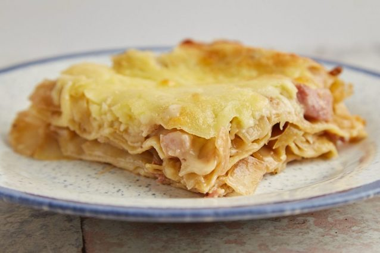

Lasagna

Description
Love lasagna, but want to add more veggies? Cabbage lasagna is a wonderful way to,make the classic dish healthier and more budget-friendly.
The filling between the pasta sheets is a fragrant mixture of cabbage, bacon, and caraway seeds, and you can use store-bought bechamel sauce or make your own. Gruyere cheese or shredded mozzarella add the finishing touches to this tasty and healthier version of lasagna.
Ingredients
- BACON 1 lbs
- SAVOY CABBAGE 1 medium head
- WHITE ONION 1
- GHEE 1 tbsp
- APPLE CIDER VINEGAR 1 tbsp
- BEEF BROTH 1 cup
- SALT, PEPPER to taste
- CARAWAY SEEDS 1/4 tsp
- UNSALTED EUROPEAN BUTTER 3 tbsp / 40g
- ALL PURPOSE FLOUR 3 tbsp / 35g
- WHOLE MILK 2 cups / 500ml
- SALT, PEPPER to taste
- NUTMEG pinch
- NO-COOK LASAGNA SHEETS
- GRUYERE OR SHREDDED MOZZARELLA 4oz / 120g
Steps
- Cut the bacon into small pieces (or buy ready-cut bacon lardons) and slowly render out the fat over medium to low heat until the bits start to brown.
- While the bacon cooks, remove the outer leaves of the cabbage and cut into quarters. Then remove the stem and then cut into 1/2-inch strips. Set aside.
- Peel and dice the onion then set aside.
- When the bacon is done, use a slotted spoon to lift it out of the pan and place it on a paper towel to drain the excess fat off. Use another paper towel to wipe the fat out of the pan.
- Heat the ghee in the cleaned pan over medium heat. Sautee the onions for about 2 – 5 minutes. Season with salt and pepper.
- Add the cabbage and cook for 5 minutes or so until it starts to soften. Add the caraway seeds to the cabbage, then season with salt and pepper and add the vinegar and broth.
- Cover and braise over low heat until the cabbage is tender – around 30 minutes.
- Pour everything into a large bowl once cooked and set aside while making the bechamel. If you’ve bought ready-made bechamel, skip the sauce-making step below and add the bacon bits and cabbage to the ready-made sauce.
- Clean the pan with a paper towel again, then put onto the stove and melt the butter.
- When the butter is melted, stir in the flour, and cook for about 1 – 2 minutes. Add the milk and any remaining cooking liquid from the cabbage to the flour and butter mixture, while whisking all the time. Bring everything to a boil while stirring. Season with salt, pepper, and nutmeg.
- When the sauce has thickened, add in the bacon bits and the cabbage, and stir everything to combine.
- Layer the lasagne sheets and the cabbage in an oven proof dish, beginning and ending with cabbage. Grate the cheese and sprinkle over the dish.
- Bake in a preheated oven at 375F/170C fan/gas mark 5 for 30 – 45 minutes, until the top is golden brown and bubbling.
- Let rest for 20 minutes before slicing and serving.